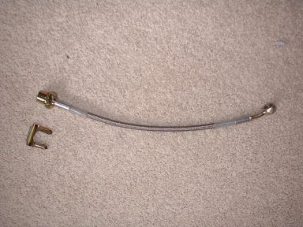
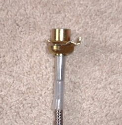
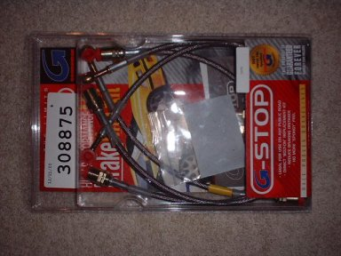

| ||||||||||||||||||||||||||||||||||||||||
|
NOTE: If you don't plan on reading the whole review, please
read the conclusion at the bottom. The first few sections probably sound
a bit scary, but all ends well.
These are my thoughts on the Goodridge Stainless Steel Brake Lines:
Needless to say, I am not pleased with these lines at all. They DO feel really good, the brakes have firmed up and the pedal travel was reduced. But the quality of the lines seems to be suspect.
Since last time I sent my defective lineback, plus one stock front line and one stock rear line. I got a completely new set of lines from Goodridge today. Apparently they fabricated a kit for me from the stock lines I sent them. They look completely different than the kit I got from PHR Online:   Here's the old kit:  You can barely make out the old shoulder in the top of that picture. It looks totally different. So if you have problems getting them installed, call Goodridge up.
So, I went to get the new lines installed today. Turns out the clips they provided me to retain the lines are too thick (see the pic above). The stock clips worked fine though (luckily they were still lying around the shop). I'll call Goodridge and let them know. BUT!!! Again, one of the lines was defective. This time they forgot to drill the hole in the fitting that attaches to the caliper so no fluid could flow through!!! We're sittin' there trying to bleed the brakes and the mechanic's like "WTF? There's no fluid!" Needless to say I'm pretty PO'd at Goodridge. It sucks, they have some of the best customer service I've ever encountered (I mean, they fabricated a kit for me) but their product seems to suck. Buyer beware I guess.
I spoke to the service manager at Goodridge last week to inquire about possibly getting a reimbursment for install charges for the lines. He asked me to FAX my receipts, which I will do. In the meantime I also sent the most recent defective line back.
Well, my lines are finally done!!! I got the replacement for the most recent defective line several weeks ago. I then had to hunt down the brake fluid I wanted to use since no one around here sells it :( I ended up using Motul DOT 5.1 brake fluid. I ordered it from www.inlinefour.com. Let me tell you, this stuff is awesome! The brakes feel so good now. Pedal travel is really minimal before they grab and the feeling is really solid when they finally do. A this point I am pretty happy with this kit, even though it was so much trouble to get it on my car. Hopefully my work with Goodridge will benefit anyone else who buys these brake lines. With the new design the kit should bolt right on...
I'm a little afraid that this review will put people off from buying this kit from Goodridge. I honestly think what happened is that they were selling a pre-2000 Celica brake kit and assumed it would work in the 2000 cars. Now that I basically provided them some stock lines with which they could create a new kit, the kits should hopefully be good to go. Keep in mind that these lines are on the cheap side too. Other company's lines run $180-$200. I guess you get what you pay for? Ok, I hope this helps someone. Thanks, Josh |